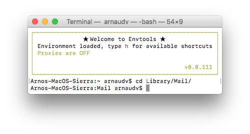
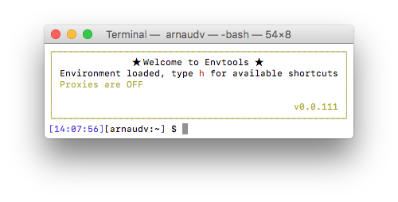

![Envtools logo]()
Introduction
Envtools is a command line helper for software developers.
Its primary goal is to simplify the tedious task of initializing a laptop/desktop for a developer. Many tools need to be installed, proxy and shell environments need to be configured. One mistake and hours are wasted trying to figure out what is wrong when a simple automation could have saved everybody's time.
Not only Envtools will setup a developer's environment in no time, it also comes loaded with goodies (bash aliases, git prompt and completion, fixes for the OS, nvm installer, Atom Plugins, etc.) as well as unique commands like a simple web server, a file encryptor, etc.
Installation
npm install -g envtoolsYou may need to use elevated user rights (sudo) to run this command.
Usage
envtools [command] <options>See the commands tab for detailed information.
Commands
Auto
envtools autoUse this command to bootstrap your environment automatically.
This command should rarely be used. Its goal is to set up and initialize a working environment for your terminal sessions. This is a step-by-step process (see the opposite option: manual) where all the available bootstrap options are being executed one after the other. You will be prompted for each options and you can bypass the ones you feel you do not need. This command allows you to load useful aliases, set your proxy, setup your git and npm configurations, etc.
Manual
envtools manualUse this command to bootstrap your environment manually.
This command allows you to choose which step to run manually. It offers the same steps that are being executed with envtools auto, but with the flexibility to choose which one you need. It is most useful for an environment that has been bootstrapped before, but needs to be reconfigured one way or another after a while (fix user permissions, re-install core node packages, new version of Envtools, etc.)
Extra
envtools extraInstall and configure some extra goodies that are not included in the manual/automatic bootstrap routines.
- Configure npm to use
Sinopia. - Install some
Atomcore packages. - Install and configure Node Version Manager (
nvm) which is a simple bash script to manage multiple active node.js versions. Please see the nvm readme for more information. - Install a
Custom Terminal Theme. It was built to use more subtle colors that are better suited when using a dark terminal. The background is black. - Install some
QuickLook Plugins. For example in the Finder, pressing on the SPACE bar when selecting a .zip or .pkg file would open a tree preview of the content of the packages... You need this. - Fix Mac screensaver files permissions. If you are changing your screensaver settings and realize that after a while, they are reset to the previous values, you need this fix.
- More goodies are added regularly...
Web
envtools webStart a simple static web server that will serve the current folder. Use --port [port-num] to specify a different port than 8080.
SMTP
envtools smtpStart a simple SMTP server that will listen for incoming email requests on port 1024 by default and print them on the console. Use --port [port-num] to specify a different port than 1024. Use --verbose to add more server logs. Useful to debug email notifications without having to rely on an external email server.
Encrypt, decrypt
envtools encrypt | envtools decryptSimple command line tool that allows you to encrypt or decrypt a file with a password. The encryption algorithm used is AES-256-CTR. You can learn about this algorithm here.
Options
-f .... The input file. -o .... The output file. -p .... Optional password, will be prompted if omitted.
Examples
$ envtools encrypt -f plain-file.txt -o encrypted-file.txt -p sekret $ envtools decrypt -f encrypted-file.txt -o plain-file.txt -p sekret
Notifier
envtools notifierSimple command line notifier using either macOS or Growl notification mechanisms. Useful when combined with another long running process for example.
Mac supports both the default notification and Growl, but you need to install and start Growl manually.
Windows also supports Growl and you also need to install and start Growl manually.
Options
--title "Some Title" Notifications have a title and a message. This is the option to set the title. --message "Some message" Notifications have a title and a message. This is the option to set the message. --typeGiving a type will ensure a corresponding icon will be used in the notification. Available types are SUCCESS, ERROR, WARNING, INFO, QUESTION and TIMER. Default type is INFO. --sound Sound only works if using macOS notifications. The list of available sounds can be found in the System Preferences under Sound->Sound Effects. Default sound is Purr.
Examples
$ someBuild.sh $ if [ "$?" != "0" ]; then $ envtools notifier --type ERROR --message 'Build failed...' $ else $ envtools notifier --type SUCCESS --message 'Build is done!'
Timer
envtools timerSimple command line timer with notification superpowers.
Parameter
Envtools timer takes only one parameter with the following format: XhYmZs, e.g. 4h2m15s or 1m42sExamples
$ envtools timer 1m3s
Config
envtools configUse this command to configure Envtools. If you ran envtools auto, Envtools was bootstraped with a default configuration. You can customize that configuration here. There are several customization levels:
Choose to load Envtools automatically at each terminal session. If you disable this option, you will not be prompted for anything else. Deactivating this options means that Envtools will remove itself from your .profile files. Even though Envtools the node package is still installed, you will not benefit from any terminal environment customization (aliases, prompt, etc.)
If on the other hand you decided to load Envtools at each session at the previous level, you will then be asked if you want to also load Envtools custom prompt (the information displayed on the prompt just before the caret).
You will reach this option only if you agreed to Level 2. Here you are offered 3 different types of custom prompts:
- Prompt #1: proxy + git information
- Prompt #2: proxy + sinopia + git information
- Prompt #3: proxy + sinopia + node + git information
This level allows you to disable the welcome banner that you see each time you open a new terminal tab or window.
At this level you can allow Envtools to check periodically (once a day) if a new version is available. If a new version is available, a notice will be displayed once a day after executing most Envtools commands.
Update
envtools updateUse this command to display update information. If you configured Envtools to check for new version automatically, the result can be displayed by this command (without having to wait for Envtools to show it to you once in a while).
Info
envtools infoUse this command to show some useful system information.
Depending on the OS, this commands displays a few data points like the total amount of time the system has been running, the type of CPU, the memory (total and free), the local and public IP addresses, proxy data, as well as a few environment versions like node (along with the corresponding v8 and module number), npm and git, to name a few.
By default, all data will be gathered except the public IP since it could take some time.
Use the flag --publicIp to show it as well.
Available options are: all, os, uptime, cpu, load, memory, hostname, localIp, publicIp, proxy, and disk
To hide a data point, use the negation, e.g. envtools info --no-uptime
Lite
envtools liteThis command will create a compressed file under the current folder.
It contains a very limited subset of Envtools, the bare minimum to at least have a decent prompt, as well as a few core aliases (ll, etc.). It does not have any of Envtools node capabilities since the package only contains shell scripts helpers. It is useful if you need to work in a remote server that does not have node/npm but can execute bash scripts.
How to use it
Copy the generated tar.gz file on the destination machine.
$ scp envlite-x.x.xxx.tgz remoteServerName:Login to the remote machine and untar the file.
$ ssh remoteServerName$ tar xf envlite-x.x.xxx.tgzAdd the following lines to your profile (.bashrc or .bash_profile)
ENVTOOLS_LITE=1 && source "$HOME/envlite/load.sh"
That's it! Just reload your environment and you should have a better prompt already.
Aliases
If you decided to load Envtools automatically at each sessions (via envtools auto or envtools config), your terminal environment will be augmented with a few useful aliases listed below. You can simply type alias at the command prompt to see them all.
Folder Navigation/Listing
| Alias | Description |
|---|---|
.. | Equivalent to cd .. |
desk | Equivalent to cd ~/Desktop |
down | Equivalent to cd ~/Download |
la | Enhanced ls to list dot files (hidden files), sorted by oldest on top. |
ld | Directories are listed as plain files (not searched recursively). |
ll | List in long format unsorted. A total sum for all the file sizes is output on a line before the long listing. |
lrt | List in long format sorted alphabetically and the most recent first. |
Files/folders Search/Diff
| Alias | Description |
|---|---|
axdiff | Performs a diff using Araxis Merge. Takes 2 arguments (folders or files). |
diffd | Performs a folder diff using plain bash diff. Takes 2 arguments (folders only). |
ksdiff | Performs a diff using Kaleidoscope. Takes 2 arguments (folders or files). |
ff | Find files or folders matching a pattern. Takes multiple arguments. Type ff -h for list of options. |
fgrs | Find a string in files. Takes multiple arguments. Type fgrs -h for list of options. |
tailf | Displays the content of a file and updates automatically if the content changes. Takes a file as an argument. Equivalent to tail -f. |
Mac Specific
| Alias | Description |
|---|---|
f | Open the Finder for the current folder. If an argument is passed, it tries to open that file with the corresponding Application (for folders, Finder is used). |
fix | Fix the 'Open With' shortcut in Finder. It removes duplicate entries. |
fixIcons | Fix the icons associated with opening Applications in Finder. |
kdock | Restart the Dock. Useful if Spaces are not working anymore. |
mate | Open Sublime Text 3. If an existing Sublime is opened, it will be used. If an argument is passed, it will load that file/folder. If not, it will be blank. |
maten | Same as mate but will open a new Sublime Text Window instead of re-using one. |
openc | Open a file in Google Chrome. |
vm | VirtualBox Manager. Allows you to start/stop and list all installed VirtualBox appliances. |
hdd | Test and return the read/write capabilities of the current disk. |
Proxy Helpers
| Alias | Description |
|---|---|
pon | If a proxy is known (see envtools auto), it will be turned ON (in env, in git configuration, in npm configuration and in sublime configuration - if any). |
poff | If a proxy is known (see envtools auto), it will be turned OFF (in env, in git configuration, in npm configuration and in sublime configuration - if any). |
pq | Displays the current status of the proxy (ON, OFF or N/A). |
son | If sinopia is installed, this command will configure npm to use your local sinopia database instead of the official registry. Make sure sinopia is running after you execute this command. |
soff | This command will deactivate sinopia and revert npm configuration to either use a proxy if you have one, or plain old direct link to registry.npmjs.org |
sq | Checks if npm is using sinopia or not. |
Environment Helpers
| Alias | Description |
|---|---|
env | Same as the shell builtin, but sorted. Equivalent to env | sort. |
i | Shortcut to envtools info. See details in the commands tab. |
r | Shortcut to reload your environment without having to restart your terminal. Useful if you changed your proxy in another terminal. |
sds | Shortcut for sudo su - |
Misc Helpers
| Alias | Description |
|---|---|
c | Clear the current terminal screen. |
net | List opened TCP connections matching the string passed in argument, e.g. net 22 will list all opened TCP connections with 22 (most ssh connections). |
psf | List running processes matching the string passed in argument, e.g. psf node will list all running node processes. |
sinopia | Envtools wrapper for Sinopia, using a custom configuration file: $HOME/.envtools/config.yaml. If you need to start the non-envtools version, just type \sinopia. |
web | Starts a small web server on port 8080, serving files in the current folder. Use --port to specify another port. Alias to envtools web. See details in the commands tab. |
Customization
If you need customization, your can drop 3 bash files that will be loaded for each sessions. Those files HAVE to be put in the folder ~/.envtools/custom/ and their names HAVE to be functions.sh, aliases.sh and exports.sh.
These files do not exist by default so you have to create them yourself. They will be loaded one by one by Envtools in the following order: functions, aliases then exports. The naming is just a convention to organize your code, but if you wanted to, you can be sloppy and just create one file (with one of the names mentioned) and load all your custom code there.
Example
Overwriting the Envtools Command Line Prompt
On Mac, the default Bash command line prompt is limited. It shows the machine name, followed by a colon, the current folder, a space and the name of the current user.
Envtools enhances the command prompt with color and customization (it is enabled by default if you run the envtools auto mode and you can enable or disable it via the envtools extra mode).
Aww, that's better! Now you can clearly see the state of your proxy, the folder is color coded and your username and machine name have been removed because really, who cares.
Of course, this is one way of customizing the command prompt. What if you prefer to see more of the path? Or you still want the username, or for crying out loud, changing the color theme? This is where customization comes in.
Here is a step-by-step instruction on how to customize your own command prompt.
Step 1
Let's create the file ~/.envtools/custom/exports.sh and add the following line: echo "Hello World". Reload your terminal and you should see something like this:
Great! We have our first customization :) You can see that the prompt still displays the proxy status - so the default prompt is still there, we are just augmenting it.
Step 2
Let's remove this line and use one of the Envtools API function: setCommandPromptWithGit
# Calling public Envtools Bash API 'setCommandPromptWithGit'
# This method takes 2 optional parameters to customize the
# command line prompt, along with git information if any.
# arg1: what will be displayed first on the prompt, before any git info.
# arg2: what will be displayed at the end of the prompt, after any git info.
setCommandPromptWithGit "[\t][\u:\w]" "\$ "
Reload your terminal and see the timestamp (keyword \t) has been added at the beginning. Please check the following page for all available keywords.
Step 3
Let's add some color to that sad custom prompt. You can use pre-defined colors available at no charge to you from Envtools or you can use the ASCII codes listed here. The colors provided by Envtools are $COLOR_RED, $COLOR_GREEN, $COLOR_CYAN, $COLOR_BLUE, $COLOR_YELLOW and $COLOR_DEFAULT - to reset any other color.
Let's use $COLOR_BLUE to spice up the timestamp part of our custom prompt:
setCommandPromptWithGit "${COLOR_BLUE}[\t]${COLOR_DEFAULT}[\u:\w]" "\$ "
That's all folks! Enjoy Envtools and don't hesitate to report any bugs or feature requests!
Frequently Asked Questions
Miscellaneous
Behind the scenes
Sinopia
Introduction
Sinopia is a private/caching npm repository server. It allows you to host a local npm registry with zero configuration. You don't have to install and replicate an entire database. Sinopia keeps its own small database and, if a package doesn't exist there, it asks npmjs.org for it, keeping only those packages you use. You can learn more about sinopia here.
Use case
There are many reasons you may want to use Sinopia, but one main use case is when working on node 6+ and located behind a proxy. There is a known issue with npm that renders node packages installations painfully slow. A workaround is to use Sinopia because it caches npmjs calls, therefore avoiding a call outside through the proxy.
How it works
Once Sinopia is installed and running on your machine, npm has to be configured to use it instead of the standard npmjs.org repository. At this point any npmcommands will first check if a required package and its dependencies are available in the Sinopia cache. If the check is unsuccessful, the command will then try to fetch the packages from npmjs.org and cache them for future use.
Installation
Installing Sinopia
Sinopia is a node package. Because there is a good chance that you are using node 6+ and are located behind a proxy (why would you still be reading this otherwise?), installing Sinopia may take a while. If you can temporarily disconnect from the proxy, go for it...
Installing Sinopia is as simple as typing the following command:
$ npm install -g sinopia
Configuring npm to use Sinopia
You can use Envtools to configure npm to use Sinopia for you. The command is available in the "extra" section of Envtools. Type envtools extra and select the Sinopia section. On the next screen, choose to enable Sinopia. You should see something close to this:
That's it! Npm is now configured to use Sinopia, whether or not you are using proxies. You can now easily turn it ON or OFF with the following aliases: son and soff.
Starting Sinopia
This is the easy part. Just open a terminal and type sinopia... Just don't close that terminal window, and remember that you have to manually re-start Sinopia if you restart your machine.
History
1.0.56 / 2018-01-06
- feat: adding npmrc profile management to ‘envtools registry’ (61d7fe3) You can save the current npm/yarn configuration in a “profile” and re-activate any saved profiles on demand. Handy when having to switch from one public or local registry all the time.
1.0.54 / 2018-01-01
Revert "chore: updating inquirer to latest and drop support for node < 6" (0ec824e) This reverts commit f98be464b696d88ecef7e6099e05042cef2b5792.
chore: updating inquirer to latest and drop support for node < 6 (f98be46)
- fix: corrupted lock file (1015727)
- refactor: taking advantage of async sub modules (b9b786a)
- chore: bump async to latest (443af54)
- chore: upgrade to latest fs-extra (885f660)
- fix: am / pm not displayed correctly on 'info' (f4f4e7d)
- chore: fix lint allignemnt error (36eba64)
- chore: update moment to latest (fix security issue) (44536f4)
1.0.53 / 2017-11-14
- fix: replacing shifter with serve (2ef8a81)
- fix: adding nvm option for linux (c8a8313)
- fix: resetting prefix when using nvm (9dd35a5)
1.0.52 / 2017-11-07
- Update Yarn to 1.3.2 (284559d)
1.0.51 / 2017-10-26
- Update Yarn to 1.2.1 (ec69539)
1.0.50 / 2017-09-07
- chore: updating to latest Yarn (1.0.1) (2c02d27)
- chore: bump dev dependencies (099a395)
- chore: bump semver dependencies (49152c2)
- chore: bump moment and node-notifier dependencies (d864e88)
- chore: bump macos-release dependencies (b797cb0)
- chore: bump inquirer dependencies (0470e27)
- chore: bump glob dependencies (0e1e062)
- chore: bump fs-extra dependencies (24e6f3f)
- chore: bump download dependencies (3ade1e5)
- chore: bump decompress dependencies (6c72ae2)
- chore: bump async dependencies (af10734)
1.0.49 / 2017-07-23
- Fix psf/netsf command in Zsh/Bash (7243ba2)
- adding global yarn bin folder to PATH if it exists (7c5465b)
- Fix all conditionals to be POSIX compliant (15a9bc3)
- adding support for up/down history search in Zsh (afbcd49)
- Set prompt (even lite) on Bash only (2ae8d8a)
- Fix clobber warning if Zsh (3844f90)
- adding support for loading Envtools with Zsh (70b0614)
confirmshould not echo anything besides questions (fe7f67e)- Updating default to "no" for proxy+registry (5dcb333)
- removing auto-submit for
confirmin Bash (3e5b92d) - removing debug statement (6a7532b)
- Fixing
confirmfor Zsh (ff6b567) - First pass at trying to support Zsh (a4ba64f)
1.0.48 / 2017-07-12
- chore: allowing win7 64 bits (57b1e40)
1.0.47 / 2017-07-08
- chore: update dependencies (0c33eaa)
- chore: updating to the latest Yarn (v0.27.5) (6ae846c)
- chore: remove jsBeautify config (prefer local prettier + eslint) (4c201e1)
- chore: removing ESLint installation (prefer local) (88a2e60)
- adding postcss language support for Atom (6272d8e)
1.0.46 / 2017-06-24
- oops, not sure when this lil guy sneaked in! (182afef)
- chore: better phrasing (3ab22a9)
- feat: adding support to set a custom registry via
regalias (cb2f5eb) - re-formating registry information (6d08167)
- first pass at showing registry info (4235fca)
1.0.45 / 2017-06-12
- fix: do not override no_proxy if it's already set (a8ebccc)
1.0.44 / 2017-06-11
- adding npm and yarn registry data to
envtools info(9c54755) - fix: even with CUSTOM_NPM_REGISTRY_PROXY=off, do not prevent removing proxies (83c1281)
1.0.43 / 2017-06-11
- Atom: replacing pane-manager with layout-control (3f0eb8c)
- bumping nvm from 0.32.0 to 0.33.2 (e904056)
1.0.40 / 2017-06-11
Adding support for setting a "special" npm registry via env (207f6ec)
- set CUSTOM_NPM_REGISTRY and it will be taken into account for both npm and yarn instead of the standard registries
- set CUSTOM_NPM_REGISTRY_PROXY to off to prevent npm proxies from being set (in .npmrc), but still supporting proxies at the env and git level.
Adding a few Atom packages (simple-panes, svg, prettier) (19c47d2)
1.0.39 / 2017-05-28
- Bumping yarn to 0.25.3 (815a94e)
1.0.38 / 2017-05-20
1.0.37 / 2017-04-28
Reverting to yarn 0.22.0 since 0.23.2 is breaking (3a656c8)
- in 0.23.2 local install is broken
- it’s fixed but not published yet: https://github.com/yarnpkg/yarn/commit/d54fff37dcf633db850f178a967e7df8120ae065
Adding an extra option to install specifically install Yarn (2d883f0)
- Bump yarn to 0.22.0 (e390849)
1.0.36 / 2017-03-22
- Oops, fix detection for yarn (609f3f8)
1.0.35 / 2017-03-21
- Not trying to install yarn on Windows… (ef01f7d)
- Installing yarn automatically if not there (c0f1610)
- moving git alias “l” to mac only (a7295ee)
1.0.34 / 2017-03-19
- Updating atom linter package dependencies (38b3f79)
- Hacky way to detect terminal while in Atom... (68c7475)
1.0.33 / 2017-02-19
- Fixing
fgrsto allow number as a pattern to search (e7f4c76)
1.0.32 / 2017-02-19
1.0.31 / 2017-02-14
- Better phrasing between yarn and npm choice (22f8663)
- Before installing npm packages, set yarn configuration (7afd541)
1.0.30 / 2017-02-14
- Better way to handle dependencies for node packages (5c874b3)
- Adding split-diff to the list of nice atom plugins (5eb6cb2)
1.0.29 / 2017-02-09
- Updating
envtools infoto include yarn (aa43a47) - Updating warning about node v6 and proxy with yarn (279757b)
Using yarn instead of npm if it's installed (b9dc644) To disable this behavior even if yarn is installed, add the following to your $HOME/.fedtoolsrc file (json format, beware of commas): "yarnvsnpm": "npm"
Adding yarn.lock (d083872)
- Adding extra type of prompt (proxy, git and node) (b01cfec)
- Better phrasing for github username (4faa798)
- Bumping dependencies (e4afd18)
1.0.28 / 2017-01-13
- Better Atom packages installation procedure (38fc724)
Adding/updating git aliases: (4852a7a)
git sthas been improved to should a simplergit statusgit lis a new alias to show a better formattedgit logRemoving webpack from list of core node packages (525cf90) Rationale: better to use webpack locally to each projects
1.0.27 / 2017-01-08
- adding terminal plugin to atom plugins list (4c95928)
- Adding support for terminal within Atom (dbacd5f)
1.0.26 / 2017-01-07
- Using new log API to center message (c5a7679)
- Warning user if trying to run
autoagain (b27cb4a) - Adding linter to project (a7901ba)
1.0.25 / 2016-12-31
- typo (5e5edcf)
- ESLint: removing config installation in auto mode (d86d86e)
- ESLint: Better phrasing (9df278c)
- ESLint: tweaking react rules a bit (76f3e3b)
- Adding atom react plugin (2e405f4)
- ESLint: updating ES6 for module and adding React support (963f6c3)
- Adding extra ESLint plugins if ESLint is required (8f8117a)
1.0.24 / 2016-12-20
- Changing help location (652c6e5)
1.0.23 / 2016-12-06
- Moving proxy before sudo-less for
envtools auto(27dedcb)
1.0.22 / 2016-12-06
1.0.21 / 2016-12-03
- [help] better quality pulsing dot while waiting on safari (1116bbf)
1.0.20 / 2016-12-02
- Adding logo to README + License (c7a91af)
- Adding logo for README (60e9161)
- Removing maven settings from repo (7644a54)
1.0.19 / 2016-12-02
- [faq] adding ellipsis to long code line (05df7b7)
- [help] adding a little animation on loading for slow connections (cc7ef00)
- Using full jQuery instead of slim (483ef5c)
- [lite] ignore
dfaccess denied messages (be90c62) - Fixing bash return (-1 is not a valid error on some distro) (0e3dbae)
1.0.18 / 2016-12-01
- [help] reducing logo real-estate on lower breakpoints (2e99afc)
- [help] adding proxy to the
envtools infosection (dba477b)
1.0.17 / 2016-11-30
- [info] adding detailed proxy info to
envtools info(f364044) - [new] adding a simple SMTP server
envtools smtp(471ca8d) - [fix] do not re-append paths to $PATH on soft reload (6237ebb)
- [help] moving image responsiveness to higher breakpoint (eb02f60)
1.0.16 / 2016-11-29
- Refactoring yellow/cyan output (777c6f4)
- [help] responsive all the way to 320 (25790f0)
- Change default box color from yellow to cyan (4f94084)
1.0.15 / 2016-11-29
- Updating custom terminal colors to match iTerm more closely (c412c4f)
- Fixing version up-to-date message appearing unexpected (1856df5)
1.0.14 / 2016-11-28
- Better blue for the logo (matches the
) (f16d260)
1.0.13 / 2016-11-28
- [faq] adding entry about git status in the prompt (8bbe2c8)
1.0.12 / 2016-11-28
- Flatter logo (fc3e967)
1.0.11 / 2016-11-27
- updating logo (42208be)
1.0.10 / 2016-11-27
- [eslint] more precise rule for 'one-var' (var/let/const) (4b4993a)
- Getting rid of commander dependency (baa4442)
- [sudo] adding correct branding (envtools vs fedtools) (5bb1717)
- Fix scenario when version has not been checked yet (58bc7a6)
1.0.9 / 2016-11-25
- [fix] custom prompt was not set anymore when in auto mode (f640676)
1.0.8 / 2016-11-25
- No need to be cheap on the actual words (7a67c20)
- Displaying update information after simple call (no commands or help) (288d497)
- Add update information - if any - after manual/extra/auto (602aafc)
- Removing node banner and adding
envtools update(dbf3444) - Moving banner from node to bash (perf gain 750ms load time) (e7f6a9d)
- [debug] adding timing and/or profiling options (a81399d)
- [debug] adding some internal profiling options (a7d7513)
- [fix] do not show error if java is not installed on mac (8534d7b)
1.0.7 / 2016-11-23
- [fix] sometimes prompt type could be lost (908f628)
- Adding option to check for update in
automode (7e757c4) - Adding hidden
--forceoption toenvtools infoto force refresh (00f280b) - [git] moving diff tool option to mac only (91ec864)
- [help] more a11y recommendations (better links) (9287957)
- [help] a11y remediation (6f18742)
- [faq] more subtle icon search (6833889)
- [faq] removing lunr stemmer to increase search results scoring (f11851e)
- [help] refactoring help generation (4ad6f9d)
- [faq] adding search icon in search field (03a411f)
1.0.6 / 2016-11-22
- add comment about try/catch for info (ccad9f4)
- [info] refactoring to speed up results a little (1e8621e)
- Adding
isLinuxto common API (c52f597) - Adding envtools info to envtools lite (67e4755)
- [info] refactoring local ip gathering (3edca5c)
- [info] fixing local ip detection (a56e639)
- Adding stric-ssl=false option to both npm and apm (96b399c)
- [info] adding clue about next update (029769c)
1.0.5 / 2016-11-21
- [info] forcing cache expiration if user asked for publicIp (92573be)
1.0.4 / 2016-11-21
- [info] adding flags for all data points, publicIp OFF by default (0a7e3f6)
- adding
infoto envtools help (2d566ce) - [info] better filesystem info (95ccc64)
1.0.3 / 2016-11-20
- [help] updating info screenshot (1d7a0ed)
- [info] adding OS name + version (for mac) (aca3991)
- [info] adding load average (4cbdb36)
- [info] simplifying ruby version + removing java home (251b351)
- [info] adding ruby + better versions formatting (922a7a3)
- [info + fix] try to detect JAVA_HOME on Windows (dfbc957)
- [info] adding maven and java versions + locations (6fcf02f)
1.0.2 / 2016-11-20
- [info] adding help (b514648)
- [info] better display (b201cd3)
- [fix] ignore ping timeout when behind proxy (a77c39f)
- [info] refactor + adding public ip (87875f3)
- [info] total memory limit to 2 digits (bf01e3e)
- [info] first pass at gathering system info (d7d8f03)
- [fix] removing unused dependency (70a68b6)
- [help] removing bootstrap source maps (abe2b0d)
1.0.1 / 2016-11-18
- Bumping to version 1.0.0 (62c7a70)
- [help] adding favicon :/ (855a516)
- [help] refactoring + adding expand/collapse TOC (92e7fc7)
- adding option to change npm prefix is destination folder is not writable (5bee4a1)
0.0.171 / 2016-11-18
- Fix post publish task (no more committing built js/css files) (ad9bef2)
0.0.170 / 2016-11-18
- [npm] Ignoring assets and templates (b364eb6)
- [help] different inlining approach + getting rid of bootstrap glyphicons (4e46185)
- [help] adding timeout to kill help server if too slow to stop (30a9b46)
- [help] kill TOC highlight when navigating to another tab (f20bb33)
- [help] inlining most assets (a0de121)
- [help] updating footer (ab105ea)
- [faq] new entry: load envtools automatically explanation (8b619a3)
- [faq] hiding the TOC if using the search bar (a53ba75)
- [help] adding introduction to alias page (78c8283)
- [help] adding explanation for 'check for update' option (28d6cd2)
- [faq] adding TOC and highlight (b53290b)
- [faq] change link for js beautify options (089fcc6)
0.0.169 / 2016-11-17
- [faq] adding entries for backup and screensaver (418894b)
- [faq] fixing highlight on multiple keywords (5717673)
- Fix menu alignment for npm packages list (53718cb)
0.0.168 / 2016-11-17
- [faq] adding nvm entries (9fcc425)
- Better wording on Atom packages option (b52caf5)
- [faq] adding sinopia entry (b17fe22)
- [faq] typo (b43b910)
- [faq] adding entries for jsBeautify and core node packages (fc2cdc0)
- [faq] removing html tags from search index (0be241d)
- Better sds output (42a7d1d)
0.0.167 / 2016-11-16
- [faq] adding highlighting (433aca0)
- [faq] more actual content (4259b6e)
- [faq] adding support for tags (bbc9ba9)
- [faq] changing header titles (091bedf)
- Making sure that faqs.id are present and not duplicated (21741d1)
- First commit for FAQ (e2dde19)
- adding lunr.js to support search within the FAQ
- adding extra FAQ tab to help page
- first FAQ entry (custom prompt)
0.0.166 / 2016-11-16
- Adding sds (1b6848d)
- Fix
fedtools configthat got broken by the previous configuration optimization (f7ab45e) - [help] fading bottom part of header (ddcc317)
0.0.165 / 2016-11-14
- Allowing proxy to be entered full (69ab957)
- Adding proxy url to
pq(08910f6) - Removing smart proxy detection (70becfb)
- [eslint] fixing
envtools automode (b05f0eb) - Do not crash if the configuration file is empty... (5dd06f2)
- Better
envtools config(cafbce8) - [envtools config] adding option to ask for version check (3039783)
- Fixing
envtools litefor freaking Windows (5a706e3)
0.0.164 / 2016-11-12
- Optimizing
fffor windows (5318431) - Removing posix dependency (316d778)
- [eslint] removing js formating (only json will be supported by envtools) (3d82e16)
- [eslint] revert es6 coding since node v4 is not supporting it perfectly.. (b1d63eb)
- Revert using 'let'... to continue to support node 4 (fc6d598)
- [eslint] reverting switch case indent requirement (f9b0294)
- [eslint] small typo (d1dd747)
- [eslint] complete rewrite (8961b09)
- [eslint] only style.js left (59c6660)
- Better ESLint configuration options (1cf9f36)
- Removing duplicate routing for 'config' (068c8eb)
0.0.163 / 2016-11-08
- Adding extra option to git to not fail in case of ssl certificate issue (b0c4272)
- [win] update dir-colors for windows terminals (aca1b30)
- [help] removing some introduction data when not applicable (ba617d3)
- Adding proxy info when starting sinopia (cf1b9f1)
- Do not run npm commands if npm is not installed (66888c6)
0.0.162 / 2016-11-07
- Do not run git commands/prompt if git is not installed (9be15cd)
0.0.161 / 2016-11-07
- Adding git-completion support (fd2d9b0)
- Bumping grunt-import to latest version (bec44bf)
- bumping to fs-extra latest release (16c8caa)
- Getting rid of old dev dependency (0c76f19)
0.0.160 / 2016-11-06
- [build] re-enabling push (should be all fine now) (b7f6e96)
- [build] fixing callback hell (d9a02ef)
- [build] deactivating push for a test run (955dfd8)
- [build] adding all before and after custom tasks (4d259bb)
- [build] complete rewrite of publish process (11c4878)
- Still trying to fix the build, after push maybe? (d3adf03)
- logging version to grunt bash task (518228b)
- updating the middle-release grunt task to not push (6e86d70)
0.0.159 / 2016-11-05
- Trying to re-fix the build process... (d6c25db)
0.0.158 / 2016-11-05
- [help] adding json-data and footer to help file (cad4bbc)
0.0.157 / 2016-11-05
- Fixing build/deploy process (f3121ac)
0.0.155 / 2016-11-04
- First pass at
envtools config(e4675ff) - [help] even more help wording update (46718ea)
- [help] a11y audit remediation (01d3116)
- Adding powered-by to
envtools web(9dc5e1f) Fix proxy + sinopia issue: if sinopia ON, then no need for npm proxy (6a56e29) cipser
[help] better wording for command tab (2a7cf9e)
- Update LANG to be compatible with Atom spell check (adf9cd9)
- [help] hide history tab on smaller bp (c356f27)
- [help toc] still trying to fix IE11 (ff01f6a)
- [help toc] adding support for IE11 (8b0126d)
- Adding TOC to commands tab (22f3b2d)
- [help] concat + minify css and js (2d45816)
- [help] removing unused files (f90cf55)
- [help] upgrading to bootstrap 3.3.7 (02526d1)
- [help] better server termination (442e6d7)
- [help] more robust server - if crashed, restart it (7d0bc0a)
- Adding name and version to commons (6e32a59)
- [help] adding size to img tag (63247b1)
- [help] removing obsolete css (b6e33ce)
- Adding autoprefixer to handle css prefixes (c661274)
- Update help for
envtools notifierwith more Growl information (19323a0) - [growlnotify] removing debug code (338535b)
- Installing growlnotify if needed (cf66cb0)
- Moving aliases
downanddeskto win/mac (6c2c8a5) - [help] scroll back to top on tab change (cdf405d)
0.0.154 / 2016-10-31
- [help] crisper logo on retina displays (89078a4)
- [help] do not start another help server if one is already up (1b0d4e4)
- Adding
envtools notifierto the fold (3fcfe1b) - Moving order of commands in help (1400a1e)
- [timer] done, integrated into
envtools timer(6107836) - First pass at integrating
envtools timer(3684e1f) - Adding
envtools encryptandenvtools decryptto the fold (7fa92a9) - [help] back to centered (32532c2)
- [help] no more center, use whole page (9933fdf)
- [help] minifying help file (aaabe57)
- [help] link to actual sinopia readme (4bb6eed)
- [help] better wording (7507c66)
envtools —helpis back.. (4085ea1)- [help] add targeting help tab (3b0769c)
- [help] remove obsolete internal help (e85e92b)
- [help] remove debug code (c03e37e)
Better help: (89f87d4)
- Possibility to open at a specific tab
- Less FOUC
Better help server start/stop feedback (10f1ca3)
- spawing mini web server for help (835dfc0)
- Fix
psfandnetaliases: color + better filtering (a9b712a) - Adding some color to grep (bcafab9)
- Fixing calls to isMac/isWindows/isLinux (31557de)
- Fix psf for windows (5094fdf)
- Refactoring bash OS detection (88fe469)
0.0.153 / 2016-10-28
- Fix node modules installation in auto mode (159c342)
0.0.152 / 2016-10-28
- Moving all node packages together (765d0a1)
- Removing check for apps (too changing) (160e2b1)
- Simplify help + better wording (a4848a3)
- Removing obsolete dependency (937204c)
- If sinopia is stopped, change prompt status color (2daf61c)
- Adding win64 support (cb0c3af)
- Fixing alias for ls in color (diff between mac and linux) (0eea480)
- typo (f3c5963)
- Simplifying git credential keychain (always installed on mac now) (a8f9fe3)
- Typo (90e9f48)
- Migrating chown for /usr/local with graphical sudo (fb5ed42)
- No more forcing admin when starting auto mode (2984922)
- Do not suggest to restart session after installing npm package (1141ec1)
- Using the newly common npm installer to install fedtools (69aa400)
- Refactoring npm installation and moving it to common (dc5034c)
- Fixing sudo when installing npm (6560c00)
- oops, wrong maven settings... fixing it! (cc891dc)
- Replacing maven configuration with latest (encrypted) (2d44433)
- Migrating node/npm to use as little sudo as possible (e1d87db)
- [sudo] removing sudo when installing fedtools (713dd7e)
- Adding webpack to the list of core node packages (82e622a)
0.0.151 / 2016-10-16
- Adding
envtools lite, a simple envtools-lite package generator (c3efb31) - Remove binding when not interactive shell (scp for example) (12a12ba)
- Removing obsolete third party code (4d9c12e)
- Adding the possibility to overwrite the DISTRO_NAME (for envtools-lite) (f6601ba)
0.0.150 / 2016-10-16
- Missed one non-lite export (e4dd560)
- Limiting shell fuctions to lite vs non-lite envtools (694ae30)
- First pass at envtools-lite (33ea0fe)
0.0.149 / 2016-10-15
- Adding third type of custom prompt (proxy, git, sinopia, node and nvm!) (7810a52)
- Updating
ralias to reload nvm as well (5ec8770) - Typo (53e75d7)
0.0.148 / 2016-10-15
- Fixing wrapper for sinopia if used with nvm (98f4889)
0.0.147 / 2016-10-15
- Adding node and nvm as an extra option available on the prompt (9854813)
- Adding nvm installer to
extraoption (a7846e1) - Better git prompt status (a61741e)
- Adding custom option to display node version in prompt (1614627)
- Adding
unsetDefaultPromptto allow better customization (705b1d6) - Simplifying banner message (46c55c3)
- Reducing /usr/local/bin priority in PATH to help nvm (c7ed1e7)
- Prevent double load (if init script is called more than once in same session) (b01a7ab)
0.0.146 / 2016-10-04
- Fixing
ffto ignore EACCESS files (3ff133f) - Improved
frgsby ignoring libraries (.so and .a files) (aeeedd0) - Better envtools logo on help page (9ffb17d)
0.0.145 / 2016-09-30
- Updating maven config for new nexus URL (3a0898f)
0.0.144 / 2016-09-25
- Hiding sinopia http logs: (1ff9853)
- no more crazy http logs for sinopia
- just display a little spinner when there is activity
0.0.143 / 2016-09-23
Convert
fgrsto use the same arguments asff(68c10f2)- pattern is now a full regex
- the pattern flag (-p) is now required…
Extra help for
ff(736d085)- Limit
ffregex match to filename insted of folder (d5868cf) - Freaking windows… blue is too blue.. (58a4b39)
- Optimized
ffto allow pure regexp as a pattern search (4cc7b3e) - Refactoring
ffandfgrsfor a more unified experience (53cb9c4) - Oops - sorry for the "bash: notifier: command not found" when toggling proxies (ccf824c)
- Sligth color fix for fgrs and Windows (4566cf9)
0.0.142 / 2016-09-22
- Upgrading ff to use the new “performance” module for stats (ca62962)
- Using ‘performance’ module from utilities for fgrs stats (1a564ec)
0.0.141 / 2016-09-21
- Fixing “ff” size calculation (1a0536f)
- Fixing “ff” not interpreting file ownership correctly (e993ed4)
- fgrs update options (no more async - always on) (7ec13a9)
- Refactoring
fgrs(9135c2f)
0.0.140 / 2016-09-20
- Preparing support for envtools notifier (726ce9a)
- Updating alias help page with kdock (bb5cb8c)
- Adding alias to kill the Dock quickly (c898daf)
- Better "confirm" bash function (073d128)
- Better alias for env (sorted) (27a7466)
- Adding possibility to have custom prompt ending indicator (697027c)
- Do not set JAVA_HOME if java is not installed (528a84b)
- Fixing common.js refactoring… (cf1b4c2)
- Refactoring common.js (45fc2bf)
0.0.139 / 2016-09-18
- Adding sinopia wrapper to handle config (cc0a887)
Better Envtools logo on help page (f212517)
- Support for retina/non-retina display
typo (c058d74)
- Better color output for "showColors" (2b4a4bf)
0.0.138 / 2016-09-17
- Optimized version checking and getting rid of "request" dependency! (04a97cd)
0.0.137 / 2016-09-16
- Better banner when there is a new version available (58fb073)
0.0.136 / 2016-09-16
- Fix log status with no newline in windows (ba3b0e3)
- Removing extra screensaver options - not working all the time… (3edcfa4)
0.0.135 / 2016-09-15
- Adding extra screensavers to "envtools extra" (6ed59f7)
- Found a way to set the Terminal as default profile (b1808c8)
0.0.134 / 2016-09-15
- Custom terminal theme mention in the help (874c929)
- Fix: do not place the terminal theme on the desktop in case of success (d6541b9)
Better dynamic proxy prompt (1cb43af)
- If the proxy is set in another tab, it should be reflected in any other already opened tabs
Adding custom terminal theme option to "entools extra" (5ab5b3d)
0.0.133 / 2016-09-14
- One more try to fix Windows prompt... (382e121)
Fix for windows prompt: (57b4ebe)
- Not fully dynamic
- Only refreshed if new terminal or with "r" alias
- F* windows
Trying to fix prompt issue with Windows (c6fd92b)
- Dynamic update of proxy/sinopia status (ff0f1ad)
- Even if the status changes in another terminal, the prompt will now reflect the change automatically
0.0.132 / 2016-09-13
Fix brew installation failure (701ba00)
- Change in decompress meant that “strip” after download is now a number instead of a boolean
Fixing invalid brew detection as well as others due to a regression with cmd.run and its output (2348481)
0.0.131 / 2016-09-13
- Check for sinopia status before publishing (b7e4aed)
- Minor CSS fix (history page) (db562c7)
- Better history generator (f46d3dd)
0.0.130 / 2016-09-06
- Adding “fastlint” to core node packages (9d693f8)
- Remove ‘Merge’ commit messages from history (e438c14)
- Remove rimraf dep and update to latest inquirer dep (2226ecd)
- Remove git warning on push “simple” versus old “matching” (c39ff58)
0.0.129 / 2016-09-06
- Simplifying Envtools configuration (profile, prompt and banner) (2eb7d5a)
0.0.128 / 2016-09-05
- Do not display sinopia running state if not on Mac (526b642)
- Fixing unicode prompt issue on non-mac (60f2d4f)
- Allowing to load 2 different custom prompt preset (5b72b2a)
- Fixing reloading env broken when no prompt are set (7b90ed0)
- Refactoring common (8945362)
- Oops, only load custom prompt if the user asked for it (2d96b78)
0.0.127 / 2016-09-05
- Fixing Sinopia running sign color (36bdd0f)
- Updating customization help page a little bit (c2e021e)
- Typo (fc37280)
- Better PROMPT_COMMAND - ready for more customizations (6bd628f)
- Adding hidden query string option to help page for debug (bf20b4f)
- Fixing npm badge display in history page (0ddf331)
0.0.126 / 2016-09-04
- Enabling sinopia configuration (envtools extra) for Windows (36023a6)
0.0.125 / 2016-09-04
- Hiding mac only help on non-mac browsers (5a63e39)
0.0.124 / 2016-09-03
- Adding npm badge to help file (4497fad)
- Removed markdown dependency on building aliases help page (145c961)
0.0.123 / 2016-09-02
0.0.122 / 2016-09-02
- Fixing prompt cutting of after a big amount of key strokes (6412100)
- Adding short logs (feedback text) for each command (f29ec7c)
- removing debug code (448eeff)
- Removing phantomjs installation - not required anymore (13bce4a)
0.0.121 / 2016-08-31
- Fix for git boostrap when there is no config at all (aca428b)
0.0.120 / 2016-08-31
- Better session reloading mechanism (1d61d79)
- Remove duplicate warning logs (19c66e5)
Refactoring to simplify some tasks (31b0779)
- Better logging
- Better options
Adding testing CLI to envtools (b802fcf)
0.0.119 / 2016-08-26
- Fix login prompt not remembering previous location (b75f32f)
- Log error when homebrew installation of wget fails (c4058d8)
- Migrating to lodash and replacing mkdirp with ensureDir (0988c6b)
0.0.118 / 2016-08-25
- Optimizing sinopia (better external usage) (9477d89)
Bump download dependency version (48a7291)
- had to update the code to take new "download" promise API for homebrew and maven downloads.
Bump dev dependencies (ef0f325)
- No need to remove “progress” for npm (fixed perf at master) (1535642)
- Better README (86577cf)
- Simplifying "envtools -h" since the web page is now supported (7539a1b)
0.0.117 / 2016-08-21
- Refactoring help page (available for Windows too) (67eca50)
0.0.116 / 2016-08-21
- Refactoring maven settings installation (83fd442)
- need a password to decrypt the settings.xml file
- better logging
0.0.115 / 2016-08-20
- Removing git link from history since it’s a private repo (cb911be)
- Slight better wording for manual options (0e919d8)
- Slight refactor of “checkForApps” - better logging (e0878e7)
- Slight refactor of load.sh (aebe635)
0.0.114 / 2016-08-17
- Bumping maven version to 3.3.9 since it's now supported (bd8a8c2)
0.0.113 / 2016-08-07
0.0.112 / 2016-08-07
0.0.110 / 2016-08-06
- Better wording for the command prompt option (1d756cc)
- eslint rules: adding es6 support (3025253)
- eslint rules: allowing template litterals (9aad3d6)
0.0.108 / 2016-06-17
- Updating gith because of an API change in fedtools-utilities (f04c08a)
0.0.107 / 2016-06-15
- Small refactoring (d89b187)
0.0.106 / 2016-06-14
- In extra mode, allowing the user to choose which atom packages to install (850d4c5)
- In manual mode, allowing the user to choose which npm packages to install (365ab88)
0.0.105 / 2016-06-10
- Better handling of npm installationg failure (1fade8c)
0.0.104 / 2016-06-10
- Fixing homebrew installing - need to run update now (0fd00fc)
0.0.103 / 2016-06-10
- Refactoring - extracting each individual plugin (d79425d)
0.0.102 / 2016-06-09
- Special character is not working on windows (4293b6e)
0.0.101 / 2016-06-08
0.0.100 / 2016-06-08
- Better welcome banner for non-mac (4fc8e8a)
0.0.99 / 2016-06-08
- Limiting 'h' for help on mac (e839e0c)
0.0.98 / 2016-06-08
0.0.97 / 2016-06-07
0.0.96 / 2016-06-06
- Replacing "cp -f" with fs.copy (ff5b6e6)
- First pass at trying to support windows (631ef1d)
- First pass at trying to support windows (e4db46c)
- (internal) Adding sugar shell method "confirm" (c83191b)
0.0.95 / 2016-05-24
- Adding gulp to needed npm packages (76ca6f9)
0.0.94 / 2016-05-19
- Updating npm bootstrap to take sinopia into account (if already setup) (ce502ae)
0.0.93 / 2016-05-13
- Fix envtools message display in node v6+ (71b3708)
0.0.92 / 2016-05-05
- Restricting phantomjs installation to 1.9.8 (44d1d11)
0.0.91 / 2016-05-01
- Slightly better help (for sinopia shortcuts) (4a8290e)
- Need to reload env when setting sinopia (on or off) (3ec233f)
- Reload custom export when reloading prompt (for ex via pq or sq) (a91dd18)
0.0.90 / 2016-04-30
Adding more sinopia goodies (c82a474) Command lines shortcuts
- "son" to force npm to use sinopia
- "soff" to disable sinopia - npm will use either your proxy or direct internet connection
- "sq" to check if npm is using sinopia
You still need to start/restart sinopia manually though.
0.0.89 / 2016-04-29
- Removing gemnasium from README (01c1f3b)
0.0.88 / 2016-04-29
- Tiny update to trigger a bump - failing to publish because of... sinopia :) (40fe7fa)
0.0.85 / 2016-04-29
- Fix package dev dependencies (eed240c)
- Removing time-grunt (a8640c2)
Adding Sinopia to handle npm caching locally (7e3ff5d)
- Install sinopia
- Activate it
- Enjoy better perfromance for npm v3 and node v6 behind a proxy
update .jsbeautifyrc to add a new line at the end of files (fbc4fb3)
- Fix invalid fs-extra dep version (9afea47)
- Update to latest stable version of inquirer (migrating to promises) (8ab92d0)
- Adding license to package.json to prevent CLI warning (960bf70)
- Updating to latest stable version of glob (aa70ff3)
- Updating to latest stable version of fs-extra (fa6bcd4)
0.0.84 / 2016-04-27
0.0.83 / 2016-04-27
0.0.82 / 2016-04-26
- Updating ESLintrc to latest from framework (deedb96)
0.0.81 / 2016-04-25
- Updating ESLintrc (a21401e)
0.0.80 / 2016-04-21
- Try to limit grunt dependencies (3c9f24f)
- grunt-cli is enough, not need to install grunt as well (6a6a928)
- Adding chai to globals for ESLint (d983aed)
0.0.79 / 2016-04-21
- Removing reserved words (be2f188)
Revert "Removing fedtools installation from envtools" (25493b7) This reverts commit 6442c135dfda86c6e2c1f95535397d06cceeacbc.
Removing grunt check (b98e61a)
- Moving version checking to public package (39d5d9e)
- Removing submodule - not working.. (1845139)
- Not sure what I'm doing here.. (1b936d7)
- Adding submodule "versions" (0ba32bf)
0.0.78 / 2016-04-15
- Adding a few more Atom packages (e864532)
0.0.77 / 2016-04-13
- Removing fedtools installation from envtools (6442c13)
0.0.76 / 2016-04-11
- Simplifying README (a0e4ac3)
- Adding eslint and unicorn to default NPM packages (69b9ceb)
- Fix lint error (37af907)
0.0.75 / 2016-02-17
- Dump the resume_auto file only in auto mode! (f47c249)
0.0.74 / 2016-02-12
0.0.73 / 2016-02-11
- Adding support for .bash_profile (on top of .profile) (b84e968)
- Relaxing eslint rule for style of wrap-iife functions (bae4e84)
0.0.72 / 2016-02-08
- Removing App Store fix since it does not work... (1068ae1)
0.0.71 / 2016-02-05
- Adding wget as the first real core package needed after brew (0334bd1)
0.0.70 / 2016-02-05
- Add bash function
getArtifactsto get nexus artifacts quickly (2f0e9e2) - Removing Atom package atomatigit (not working very well) (1f32f46)
- Adding project-manager to the list of Atom packages to be installed (2914a1e)
0.0.69 / 2016-02-04
- Adding alias to fix icon association in Finder (e13033b)
- Adding alias for testing HDD performance (hdd) (327490e)
0.0.68 / 2016-02-03
- Oops, forgot vendor prefixes... who do I think I am.. (bb5331a)
0.0.67 / 2016-02-03
- Even better logo via SVG (ed42faf)
0.0.66 / 2016-02-03
0.0.65 / 2016-02-03
- Ooops - fixing regression introduced by ESLint config - async.waterfall issue (1aafe0a)
0.0.64 / 2016-02-03
- Adding ESLint configuration to auto and manual (5356b52)
- Trying to fix Atom package installation (fde62ff)
0.0.63 / 2016-02-02
- Refactoring
githto access better tags info and removing useless sugar (git status really?!?) (526d852)
0.0.62 / 2016-02-02
- Adding 'new version available' to banner if there is one... (acff94b)
0.0.61 / 2016-02-02
- Adding isDirtyGit bash function to check if a local repo is clean (e78bdc0)
0.0.60 / 2016-02-01
- Fixing Araxis Merge (fc2c302)
0.0.59 / 2016-02-01
- Reverting to Maven 3.2.5 (See PN-13533) (72c4ffa)
0.0.58 / 2016-02-01
- Removing heroku and status from gith (38d9d82)
- Removing support for sublime proxy switch (was buggy) (362e00d)
- Renaming options.bootstrap into options.auto for consistency (2415f48)
- Adding 'svgo' to core npm packages and removing 'jshint' (851801e)
0.0.57 / 2016-01-31
- Resuming envtools auto after first time env/proxy setup (a5c51a1)
0.0.56 / 2016-01-31
0.0.55 / 2016-01-31
- Adding atomatigit to atom package list (6079808)
0.0.54 / 2016-01-31
- Removing wrong notification (d7a8974)
0.0.53 / 2016-01-31
- Missing file in the final npm package (5ea41e2)
0.0.52 / 2016-01-31
- Removing test from publish since there are no tests... so far.. (75a90f1)
- No need to artificially bump bash version since it's now part of "release" (69a20f3)
- Removing old file (9772a1d)
0.0.51 / 2016-01-31
- Adding history to help file (64ba2df)
- Better proxy fat finger filtering (366d79b)
- Better error/message on proxy setting (6f9d8fb)
0.0.50 / 2016-01-30
- Better auto mode: do not ask for env or proxy if already set (4114324)
0.0.49 / 2016-01-30
- Better centralized messaging (37a4777)
- Setting the proxy should not end the process (e5e1472)
- Setting fancy banner and prompt for auto mode (8097d57)
0.0.48 / 2016-01-30
- Refactoring to handle auto/manual/extra requests more efficiently in the future (d9dbdd0)
- More Atom packages (15bfb82)
- Minifying help file (cbd6d87)
0.0.47 / 2016-01-29
- Adding more essential Atom packages (a8ec998)
0.0.46 / 2016-01-29
- Ooops, missing banner setup during auto (4025bf5)
0.0.45 / 2016-01-29
- Create runtime dir only if it doesnt exist (~/.envtools) (6010694)
- Adding option to remove the welcome banner (64d84c6)
- Adding http-proxy to Atom proxy helper (1132fb1)
- Adding Atom packages (c287f25)
- Customization help - TBD (fe01c6d)
- Adding Atom to the help intro (deab837)
0.0.44 / 2016-01-28
- Setting npm progess false by default (to speed up node v5+) (94978c2)
- Removing maven warning during bootstrap (d40551e)
0.0.43 / 2016-01-28
- Adding envtools web (ae83857)
0.0.42 / 2016-01-27
- Adding small blurb about
fedtools extrain the help file. (ab824c5) - Renamed help.md into aliases.md (cleaner...) (74a0e05)
- Updating git-ptompt to latest release (41efaf5)
- Unused var (b876b01)
0.0.41 / 2016-01-27
- Slighty better README/help (1b8f06c)
- Fixing "version" alias (fe614b6)
- If boring is passed, do not ask for the changelog (dad4341)
- displayProxy should also reset the env if status is known (81395a3)
0.0.40 / 2016-01-26
- Updating proxy setup for Atom (359f266)
- Adding screensaver fix to extra options (e446657)
- Hidden option for extra (268bad0)
- Fixing backup dir to just day hour min (a0a7ae5)
0.0.39 / 2016-01-25
- Fix check version process and display (9765663)
0.0.38 / 2016-01-25
- Display proxy should also update the prompt (da22ebf)
0.0.37 / 2016-01-25
- workaround mkdirp async issue (65a065a)
0.0.36 / 2016-01-25
- Fixing quicklook plugins - remove only the ones that are going to be installed (84535d7)
- Starting to add extra goodies (quicklook this time) (ac3dce2)
0.0.35 / 2016-01-25
- Help: adding warning about node and java (36775dc)
0.0.34 / 2016-01-25
- Better help (25549c2)
0.0.33 / 2016-01-24
- Adding Envtools vesion to welcome banner (9fdacf7)
- Ignore error when setting proxy off and git config complains - it's ok (133ee42)
- Do not ask for Proxy confirmation if proxy is already set (in auto mode) (b170a8e)
0.0.32 / 2016-01-24
- Wip on adding debug flag (8d07061)
- Bypassing maven check if we just installed it before... (3f39fb3)
- Installing Compass should be silent in auto mode (cd761e4)
- Logging error message when failure to download maven (b88ea39)
0.0.31 / 2016-01-24
- Adding .hushlogin to prevent nasty welcome banner (948e6f4)
0.0.30 / 2016-01-24
0.0.29 / 2016-01-24
- Playing with the welcome banner... (7a5ba37)
0.0.28 / 2016-01-24
0.0.27 / 2016-01-24
- Fixing async installation of ruby/compass (6b1f9dd)
0.0.26 / 2016-01-24
- Better wording for restarting session needs (c66d09c)
0.0.25 / 2016-01-24
- Need to specifiy gem install dir (in case env is not setup yet) (dbddc09)
0.0.24 / 2016-01-24
- Fixing brew installation (was not working since standard brew script is interactive) (daf3735)
- Default to yellow command prompt when ssh'ing (2c7c959)
0.0.23 / 2016-01-24
0.0.22 / 2016-01-23
- Confirm Admin request for git only if not bootstrap mode (53cfc4d)
0.0.21 / 2016-01-23
- Set gem path via brew only if brew is installed (eea4fa4)
0.0.20 / 2016-01-23
- If .profile doesnt exist, create it (e19a797)
0.0.19 / 2016-01-23
- Refactoring the prompt code to allow easier overridde (91aa3ab)
- Moving custom functions/exports/aliases at the very end to make sure they can override anything (3f9ce90)
- Better proxy set/unset with environment auto reload if needed (75d0f0a)
0.0.18 / 2016-01-23
- Adding missing commit logs to npm package (7fb60d3)
0.0.17 / 2016-01-23
- Oops debug logs in prod.. (026497b)
0.0.16 / 2016-01-23
- Oops missing rimraf dep (8c4c6e1)
0.0.15 / 2016-01-23
- Oops, forgot to change the path to custom functions (ff1b4aa)
- Adding enabling/disabling command prompt (1b6977b)
- ff ignores node_modules by default, but adding --rainbow to bypass (6474c31)
- Removing unused code (e518eb0)
- Fixing typos in help file (f6e5c7f)
0.0.14 / 2016-01-22
0.0.13 / 2016-01-21
- Fixing async issue with mkdirp - too tired to investigate :/ (c001564)
0.0.11 / 2016-01-21
- Adding Maven installation (07c382a)
- Adding aliases for desktop/download folders on mac (8a7cab7)
- Fixing invalid custom folder in help (db0f69e)
- Fixing display banner for linux (no help here) (45ebf3d)
- Adding missing ccc alias (6f969c1)
0.0.10 / 2016-01-21
- Adding alias for help in mac (bf8b742)
- Updating alias for Sublime (a1538c5)
- Generating help.html (a46a35d)
- Man pages: adding extra bit about customization (cef6295)
- Better man pages (35814d2)
0.0.9 / 2016-01-20
- Fixing git bootstrap - forgot array of cmd would not be async... (e9810f4)
0.0.8 / 2016-01-20
- Adding missing file at root level of npm package - not sure if this is going to work thouhg.. (20bc08a)
- Changing commands to 'auto' and 'manual' - makes more sense (863cf0f)
- Better introduction + better verbiage on proxy (3542e41)
0.0.7 / 2016-01-20
- Better handling of proxy setting (before and after) (6c420f6)
- Do not ask for admin access in bootstrap mode (5eeee4b)
0.0.6 / 2016-01-20
0.0.5 / 2016-01-20
- Fixing grunt tasks... (8e64d3d)
0.0.4 / 2016-01-20
- Adding shell folder to npm distro (54eef05)
0.0.3 / 2016-01-20
0.0.0 / 2016-01-20